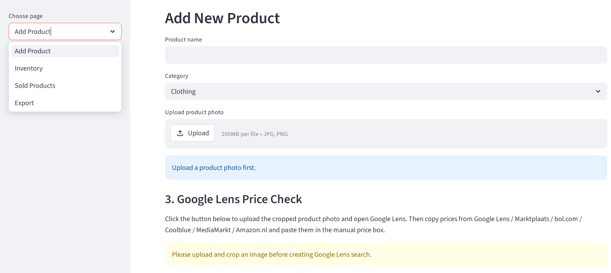
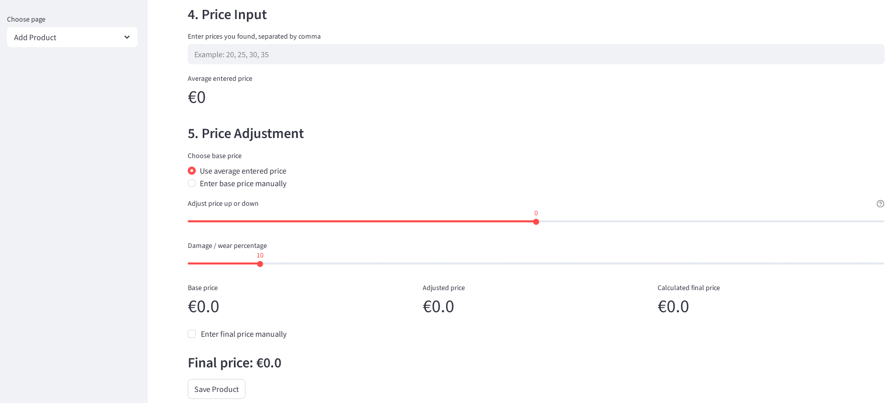

Designed a Python-based system for managing and estimating second-hand product prices using image-based analysis and data-driven pricing methods.
The Kringloop Pricing System is a smart inventory and pricing platform developed for second-hand product management. The system helps users register products, upload product images, analyze market prices, estimate resale values, and manage inventory efficiently.
The project combines image-based product handling with pricing analysis workflows to support sustainable retail and second-hand store operations. It was designed using modern web technologies and Python-based backend logic.

The system allows users to add second-hand products into the inventory by entering product details, selecting categories, and uploading product images.
Features include:
The interface is designed to be user-friendly and optimized for fast product registration workflows.

One of the key features of the project is the image-assisted pricing workflow. Users can upload a product image and compare market prices using platforms such as Google Lens.
The system supports manual entry of discovered market prices and automatically calculates average values for better second-hand pricing estimation.
The pricing engine allows dynamic adjustment of second-hand prices based on:
The system calculates adjusted and final resale prices automatically, helping store managers determine fair and realistic second-hand values.
This approach combines data-driven estimation with practical resale considerations, making the pricing process more efficient and consistent.
The goal of this project is to support sustainable retail operations by improving the efficiency of pricing second-hand products. The system reduces manual effort, improves pricing consistency, and helps users make informed pricing decisions using market-based data and product condition analysis.